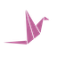

wysdym.wysdym is the platform every GTM agent runs on — the layer underneath, not another agent vendor. Shared memory, skills, integrations, governance, and an outcome loop, so every agent compounds into a revenue advantage.
wysdym is live — and we're onboarding a select group of customers as demand grows. Apply to run every agent on the harness; we take on the ones we can go deepest with.
Apply for access →How the five components — and Operator — actually work.